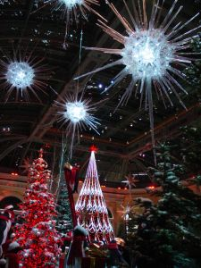

最美的礼物
文/图 刘莎伦
去年的最后两个月，过得极其艰苦，sandy风暴横扫，在体力、精力、时间和心灵上都留下残痕，以及无休止地增加工作量，得到的不理解与斥责，一贯追求完美的性格 ……令我几近崩溃。
重新怀疑生命的意义，几乎没有了活着的力气。大学生Ian来看我，学生Y从大陆来Email，被大学名校提前录取的家长给孩子们送来巧克力，从名校放假回来的学生给大家送来零食点心……让我的心一点点回暖。过了年关，这些日子，一直在想着活着的自由，心灵的释放。
很多人的心中永远充满恐惧、焦虑、不安全感、不安定感。以为一切的焦虑担心来自钱不够多，於是对每一分钱斤斤计较，对每个人充满敌意。明明不缺钱，却拼命往钱洞里钻，被钱和物质奴役，失去心灵的自由，还把这种捆绑强加给家人、孩子及周遭的人，强迫大家跟著鸡犬不宁。
很多很聪明的人，高学历、高智商，却从不知道、不承认、不愿面对自己内心的问题。不良的情绪干扰正常的生活和人际关系，来自不安定的童年，争斗、排挤、轻视、父母关系不睦、家庭贫困等等。即使最聪明的人也无法抵挡情绪的搅扰，失去生活中正确的判断和认知能力。
十几年前，有次家中来了一群台湾“亲戚”，附带来朋友，大多是在美读书的年轻人，大谈美国名校和未来的展望。我突然觉得局外人般的孤独。
当中不乏高学历的大龄女，一位说，只有中信金融集团大少东辜仲谅才能让她动心：又高又帅又有钱。面对这样一群基督徒，我的心中有些不是滋味。
前两天，在报上看到一则新闻，辜仲谅上了Good TV接受专访，畅谈他成为基督徒的心路历程。官司缠身、妻子重度忧郁症、儿子自闭症……他“真的觉得天要塌下来了。”世人羡慕加嫉妒的“王子”，原来也有人间的愁苦。文中还提到王文祥为他祷告。
前几年，台湾已故首富王永庆的二房次子王文祥在新泽西州作见证，讲述患癌后，上帝引导他成为基督徒……
在早前，偶然看到八卦杂志上的文章，记者以嘲讽的口吻写道：王文祥的姐姐王雪红公司的高管，都是请来牧师和基督徒担任，不懂经营，每周公司还有爱宴。正逢一个大官司，让他们的上帝来救他们吧。该记者最后如此嘲笑道。
而今，王雪红的公司不但挺立台湾“股王”位子，事业版图更大扩展。默默做事，默默承担，为主作见证。前阵子接手香港的传媒机构，我相信是通过影视传媒为主作见证的计划之一。
台湾社会是个很小的圈子，很久很久以前，有一年受邀去纽约表兄家过感恩节，身为牧师的夫妇俩说，原本王永庆二房太太杨氏，今晚要从加拿大抵达他家中过节，因机票太贵，一张一千美元而作罢。失去了与这位伟大的母亲结识的机缘。她同时是位虔诚的基督徒，养育了几个孩子，成就很多人，影响社会很大的层面。
很多年来，我以王雪红为榜样，没有她的智慧与能力，没想像她一样成功，只愿像她一样在职场上荣耀主名。
钱再多，都不能填补内心永远的空洞与饥饿。对现实不满，革命也好、文字发洩也好、哲学思想也好、遁入空门也好，甚至染上性瘾、药瘾、毒瘾……只会将人诱入死亡的深渊。
十几年前，有一天驾车在95号高速公路上驰骋，突然，看到“上帝之指”从云彩背后照耀下来，广阔的一片亮堂堂的天地。原来，祂在那里，照耀之处，无处不有，从母腹开始，没有离开过我……我不能自已，一路痛哭。
十几年前，有一天驾车在95号高速公路上驰骋，突然，看到“上帝之指”从云彩背后照耀下来，广阔的一片亮堂堂的天地。原来，祂在那里，照耀之处，无处不有，从母腹开始，没有离开过我……我不能自已，一路痛哭。
唯有上帝，能填补我们内心的空虚，在祂里面才有永恒的平安、喜乐和安慰。
我的工作，常让我遇到极度焦虑的家长，让人心酸与心痛，如恶梦迷荡一般，摇不醒，说不通，不能相信人，不信任老师，分不清真假好坏。总以为是在维护和照顾、爱孩子，实则在伤害自己的孩子。能够伤害孩子的一定是孩子身边的人，才能把孩子伤得那么深。
为此，总是不忍、不舍，在承受很多误解成见的同时，默默地呵护与理解这些心爱的孩子，愿他们快乐自由地成长，成为別人的祝福，而不是代代相传的恐惧、焦虑与伤害。
有时觉得孤单，特別是得不到教会的理解和支持。辜仲谅的见证，让我心生安慰，我们并非孤独的一群，说我们迷信也好，没有文化见识也好。在各地各处，不论是王子或穷人，我们有共同的父亲，在祂翅膀的阴下，不论各自经历什么样的苦难，背后都隐藏着永恒的爱与祝福。
（当我正在写此文时，家中无意间一直在播放义大利盲人歌唱家Andres Bocelli的歌曲，我的眼泪一直在流，写完时，刚好歌声也停了，我很好奇，起身去查看歌名：When A Child Born(当一个婴儿诞生）、Go Where Love Goes(到有爱的地方去）。
一个人，生下来就什么都看不见，却因此能听到別人听不到的声音——从神而来的声音，并把这种爱的声音传给他人。他在歌唱时，脸上永远充满祥和、喜悅、沉醉与温柔。以前，我不明白为什么。有一阵子，心中忧伤，心里总湧起他深远的歌声：maria（注：耶稣的母亲玛利亚），现在突然明白了，他是个传达上帝的爱的声音的使者。从今天开始，我会更加喜爱他的歌声，没有说教、没有牵强，来自天籁之音，喜悅、希望与执著。
谢谢你，Mrs.Luke，你送给我的这片CD是2012年圣诞最美好的礼物。还有Mrs.Hendy，谢谢你，你赠送的CD是过去这一年中最纯真感人特別的——我的学生Elizabeth和哥哥们演唱、演奏的歌曲：“爱慕主恩”。美好的爱的声音，陪伴我工作和思想。
心温暖起来，不再孤单。一整天，没有外出半步，在室内一边工作，一边在心里想着：一个人应有的坚持与理想，比会腐臭的钱财有意义得多。
夜已深，远望去，河面上一连好几天深锁的浓雾几近消失。)
（Jan/15/2013）
Copyright © 2013 www.sharronartcenter.com
All artworks original, all rights reserved,do not plagiarize. Do not use text without permission.
版权 © 2013 www.sharronartcenter.com 所有艺术作品皆为原创 版权所有。盗用必究。 文字非经同意不得转载。